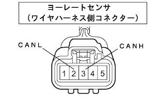
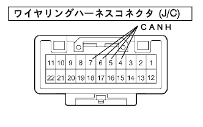
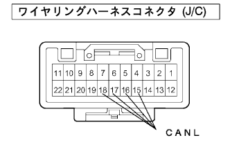
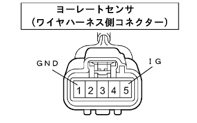

Control -based CAN communication system yaw / G sensor communication mode |
| Diagnostic item | Symptoms | Suspicated part |
|---|---|---|
| VSC ECU communication mode | U0123/62 (yaw rate sensor communication abnormality) and U0124/95 (G sensor communication abnormality) are output simultaneously. |
|
| Step 1 | CAN bus disconnection inspection (yaw G sensor branch line) |
|  |
Turn off the IG switch and separate the connector of the yaw -rated sensor (yaw / G sensor) from the yaw -rated sensor (yaw / G sensor).
Measure the resistance of 3 (CANH) ← → 2 (CANL) of the vehicle harness of the vehicle harassment (yaw / G sensor).
|
| ||||
| NG | |
| Step 2 | Wiring harness connector (J/C) Single Inspection (CANH-CANH) |
|  |
Cut the wiring harness connector (J/C) from the vehicle harness.
Measure the resistor between 6 (CANH) ← → 7 (CANH), 6 (CANH), 6 (CANH), 6 (CANH), 6 (CANH), 6 (CANH), 6 (CANH) of the wiring harness connector (J/C).
|
| ||||
| OK | |
| Step 3 | Wiring harness connector (J/C) Single Inspection (CANL-CANL) |
|  |
Measure the resistor between 17 (CANL), 17 (CANL), 17 (CANL), 17 (CANL), 17 (CANL), 17 (CANL), 17 (CANL), 17 (CANL), 17 (CANL) of the wiring harness connector (J/C).
|
| ||||
| OK | ||
| ||
| Step 4 | Wire harness inspection (IG, GND) |
|  |
Use SST (Toyota Electrical Tester) to inspect the terminals of the yolly sensing wire ← → body ground.
| Inspection terminal | Measurement conditions | standard |
|---|---|---|
| 5 (IG) ← → Body Earth | IG switch ON | 10-14V |
| 1 (GND) ← → Body Earth | Always | There is an conductor |
|
| ||||
| OK | ||
| ||